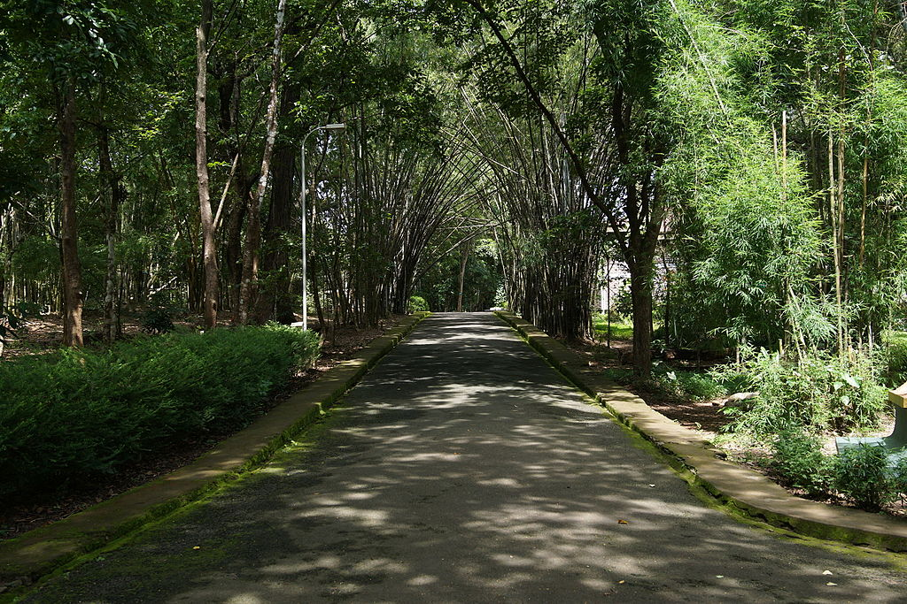
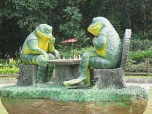
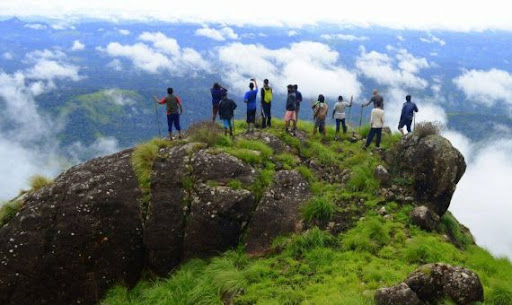

MALAPPURAM
Malappuram is a city in the Indian state of Kerala, spread over an area of 58.20 km². The first municipality in the district formed in 1970, Malappuram serves as the administrative headquarters of Malappuram district. Divided into 40 electoral wards, the city has a population density of 1,742 per square kilometer.



NILAMBUR TEAK MUSEUM
Teak Museum is located 4 km from Nilambur, a town in the Malappuram district of Kerala, South India. Teak occurs naturally in India with the main teak forests found in Kerala.
In the old administrative records of the Madras Presidency, it is recorded that the most remarkable plantation owned by Government in the erstwhile Madras Presidency was the Teak plantation at Nilambur planted in 1844.
The museum, a two-storey building, is the world's first teak museum and is operated by the Kerala Forest Research Institute. The exhibits include comprehensive information on aspects of the use of teak in their exhibits and articles on the subject. The museum provides extensive information of value historically, artistically and scientifically.
The museum was established in 1995 on the campus of the centre of Kerala Forest Research Institute (KFRI) because of the historical significance of teak to the area. The world's first teak plantation was planted in Nilambur in the 1840s by the British
KODIKUTHIMALA
Kodikuthimala also known as the Ooty of Malappuram [2] is a hill station in the Malappuram district of Kerala in India. Located in Vettathur and Thazhekode villages, at a height of 540 m above sea level, this is the highest geographic peak in Amminikkadan hills.
Apart from the Western Ghats, Kerala has five major independent mountains ( free-standing mountain ). Of these, three are in Malappuram district, one in Palakkad and one in Kannur. Although distant from the Western Ghats, these five mountains and the Western Ghats formed at the same time. Therefore, geographically, these five mountains belong to the Western Ghats branch. The largest of these five mountains is the Cheriyam mountain at Mankada in Malappuram district. This Cheriyam mountain is also known as Panthalur Hill. Cheriyam mountain is located at an elevation of 613 m (2,011 ft) above sea level. Mount Amminikkadan is the second highest mountain of this five mountains. The height of this Amminikkadan mountain is 540 meters. Arimbra mountain in Kondotty in Malappuram district is the third highest mountain of this five mountains. The height of this Arimbra mountain is 475 meters.


